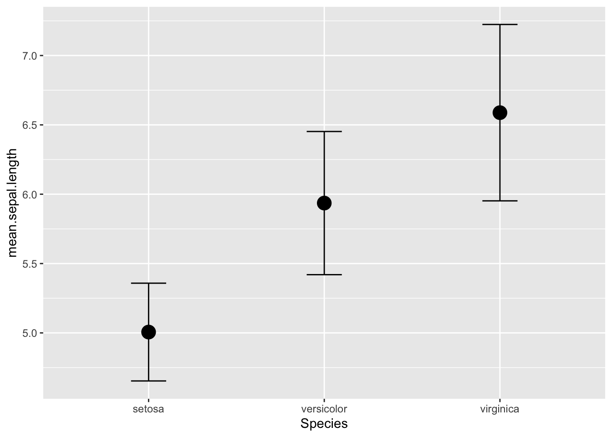
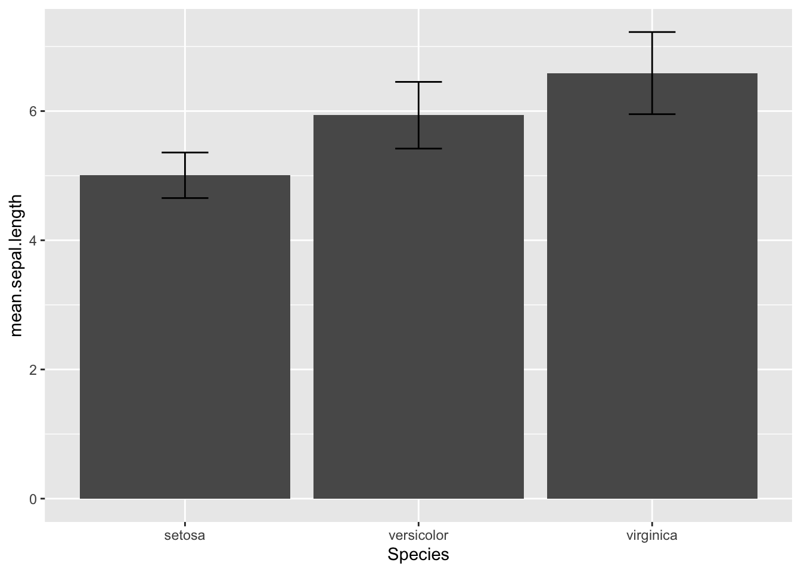

Now that we have dipped our feet into plots and stats in R, I think
you are getting a better sense of the fact that ‘wrangling’ or
‘manipulating’ data is one of the biggest steps to becoming proficient
in R and all that it has to offer.
For example, for any given analysis, you will likely have to
‘manipulate’ the data in some ways, such as
subsetting the data to look at certain groups or
treatments
filter out certain data that don’t meet some criteria
focus in on a select set of variables of interest
generate new variables based on calculations
rename variables
recategorize groups
calculate means, and variance for different groups
merge multiple datasets together
etc., etc., etc.
These tasks are where the packages dplyr, tidyr and other packages in the
tidyverse–a series of packages
designed for all kinds of data tasks. This also includes the popular ggplot2 package for
graphics.
The tidyverse packages are constructed by Hadley Wickam. There are several books that
cover how to use these packages, including R for Data Science
which is available for free as an
online book

In this module, we’ll be learning some functions from the packages
dplyr and tidyr.
We will do this by playing with data from the World Bank.
1. Installing and loading packages we need for this module
One can install each package separately, but you can also just
install all “tidyverse” packages simply by running this command:
install.packages("tidyverse")
Note that this simply downloads the packages onto your computer. When
you are ready to use them, you will have to load the package onto the
environment by running the function
You now have the package downloaded on your computer, but to actually
use it, you have to load the package. We can load the entire
tidyverse package (or, if you prefer, you can just load the
tidyr package).
library(tidyverse)
## ── Attaching core tidyverse packages ──────────────────────── tidyverse 2.0.0 ──
## ✔ dplyr 1.1.4 ✔ readr 2.1.5
## ✔ forcats 1.0.0 ✔ stringr 1.5.1
## ✔ ggplot2 3.5.2 ✔ tibble 3.2.1
## ✔ lubridate 1.9.4 ✔ tidyr 1.3.1
## ✔ purrr 1.0.4
## ── Conflicts ────────────────────────────────────────── tidyverse_conflicts() ──
## ✖ dplyr::filter() masks stats::filter()
## ✖ dplyr::lag() masks stats::lag()
## ℹ Use the conflicted package (<http://conflicted.r-lib.org/>) to force all conflicts to become errors
Two important thing to notice here. First, the
message tells you what packages were actually loaded as part of the
tidyverse “metapackage”. You see that this includes 8 packages:
ggplot2,tibble, tidyr, readr, purrr, dplyr, stringr, and forcats.
Second, the message tells you that there are two functions in the
dplyr package that conflict with existing functions:
filter() and lag(). This is sometimes very
important to know! This means that the filter() function
works differently before and after loading this package.
Some things to know about
getting started with ‘tidyverse’
Pipe Operator (%>%): tidyverse makes
use of the pipe operator %>%, which allows you to carry
over the output of one function to the next function. This can make
series of data manipulation sequences much more efficient.
Tibbles: “tibble” is a special class of dataframe
that is used in tidyverse. It is largely the same as a dataframe but it
has some features (or rather, lack of features) that make for ‘defensive
coding’. That is, it forces you to avoid dangerous operations, such as
changing variable names or types (you have to explicitly do this) or
allow “partial matching”.
To learn more about tibbles, start here
3. Demonstrating the basic functions with the iris database
3.1 Dataframe vs. tibble
Let’s take this iris dataset…
If I just call the iris dataset, it will give me up to 100 rows (not
shown because it’ll take up too much space)
iris
So, we often look at just the ‘top’ of the dataframe using the
head() function:
head(iris)
## Sepal.Length Sepal.Width Petal.Length Petal.Width Species
## 1 5.1 3.5 1.4 0.2 setosa
## 2 4.9 3.0 1.4 0.2 setosa
## 3 4.7 3.2 1.3 0.2 setosa
## 4 4.6 3.1 1.5 0.2 setosa
## 5 5.0 3.6 1.4 0.2 setosa
## 6 5.4 3.9 1.7 0.4 setosa
One difference with tibble is that it will natively just show you the
first 10 rows, with some extra information added in, such as the class
of object each column contains.
Let’s make a version of the iris dataset that is in a tibble
format:
iris.tbl=tibble(iris)
iris.tbl
## # A tibble: 150 × 5
## Sepal.Length Sepal.Width Petal.Length Petal.Width Species
## <dbl> <dbl> <dbl> <dbl> <fct>
## 1 5.1 3.5 1.4 0.2 setosa
## 2 4.9 3 1.4 0.2 setosa
## 3 4.7 3.2 1.3 0.2 setosa
## 4 4.6 3.1 1.5 0.2 setosa
## 5 5 3.6 1.4 0.2 setosa
## 6 5.4 3.9 1.7 0.4 setosa
## 7 4.6 3.4 1.4 0.3 setosa
## 8 5 3.4 1.5 0.2 setosa
## 9 4.4 2.9 1.4 0.2 setosa
## 10 4.9 3.1 1.5 0.1 setosa
## # ℹ 140 more rows
You can read about the detailed differences between a dataframe and
tibble on
this webpage
3.2 Using pipes (%>%) to chain together sequence of
actions!
First, I’m going to introduce the “pipe”–perhaps the most useful part
of the tidyverse grammar (which actually comes from another amazing
package called magrittr, if you care…).
Basically, piping is when the %>% operator is used to
forward a value, or the result of an expression, into the next function
call/expression.
For example, let’s say we want to convert the iris
dataframe into a tibble. I could use tibble(iris) as I did
above. But I can also do this:
iris %>% tibble()
## # A tibble: 150 × 5
## Sepal.Length Sepal.Width Petal.Length Petal.Width Species
## <dbl> <dbl> <dbl> <dbl> <fct>
## 1 5.1 3.5 1.4 0.2 setosa
## 2 4.9 3 1.4 0.2 setosa
## 3 4.7 3.2 1.3 0.2 setosa
## 4 4.6 3.1 1.5 0.2 setosa
## 5 5 3.6 1.4 0.2 setosa
## 6 5.4 3.9 1.7 0.4 setosa
## 7 4.6 3.4 1.4 0.3 setosa
## 8 5 3.4 1.5 0.2 setosa
## 9 4.4 2.9 1.4 0.2 setosa
## 10 4.9 3.1 1.5 0.1 setosa
## # ℹ 140 more rows
Right now, this seems a bit puzzling and not that useful… but, you
will quickly see how the %>% operator can help you build
nice pipelines (pun intended) for data wrangling!
From here on out, I will build the codes using pipes as a
default.
3.3. Filter by row values
For example, you can use the filter() function (see more
below) to show just the data for the iris species Iris
setosa.
filter(iris, Species=="setosa")
## Sepal.Length Sepal.Width Petal.Length Petal.Width Species
## 1 5.1 3.5 1.4 0.2 setosa
## 2 4.9 3.0 1.4 0.2 setosa
## 3 4.7 3.2 1.3 0.2 setosa
## 4 4.6 3.1 1.5 0.2 setosa
## 5 5.0 3.6 1.4 0.2 setosa
## 6 5.4 3.9 1.7 0.4 setosa
## 7 4.6 3.4 1.4 0.3 setosa
## 8 5.0 3.4 1.5 0.2 setosa
## 9 4.4 2.9 1.4 0.2 setosa
## 10 4.9 3.1 1.5 0.1 setosa
## 11 5.4 3.7 1.5 0.2 setosa
## 12 4.8 3.4 1.6 0.2 setosa
## 13 4.8 3.0 1.4 0.1 setosa
## 14 4.3 3.0 1.1 0.1 setosa
## 15 5.8 4.0 1.2 0.2 setosa
## 16 5.7 4.4 1.5 0.4 setosa
## 17 5.4 3.9 1.3 0.4 setosa
## 18 5.1 3.5 1.4 0.3 setosa
## 19 5.7 3.8 1.7 0.3 setosa
## 20 5.1 3.8 1.5 0.3 setosa
## 21 5.4 3.4 1.7 0.2 setosa
## 22 5.1 3.7 1.5 0.4 setosa
## 23 4.6 3.6 1.0 0.2 setosa
## 24 5.1 3.3 1.7 0.5 setosa
## 25 4.8 3.4 1.9 0.2 setosa
## 26 5.0 3.0 1.6 0.2 setosa
## 27 5.0 3.4 1.6 0.4 setosa
## 28 5.2 3.5 1.5 0.2 setosa
## 29 5.2 3.4 1.4 0.2 setosa
## 30 4.7 3.2 1.6 0.2 setosa
## 31 4.8 3.1 1.6 0.2 setosa
## 32 5.4 3.4 1.5 0.4 setosa
## 33 5.2 4.1 1.5 0.1 setosa
## 34 5.5 4.2 1.4 0.2 setosa
## 35 4.9 3.1 1.5 0.2 setosa
## 36 5.0 3.2 1.2 0.2 setosa
## 37 5.5 3.5 1.3 0.2 setosa
## 38 4.9 3.6 1.4 0.1 setosa
## 39 4.4 3.0 1.3 0.2 setosa
## 40 5.1 3.4 1.5 0.2 setosa
## 41 5.0 3.5 1.3 0.3 setosa
## 42 4.5 2.3 1.3 0.3 setosa
## 43 4.4 3.2 1.3 0.2 setosa
## 44 5.0 3.5 1.6 0.6 setosa
## 45 5.1 3.8 1.9 0.4 setosa
## 46 4.8 3.0 1.4 0.3 setosa
## 47 5.1 3.8 1.6 0.2 setosa
## 48 4.6 3.2 1.4 0.2 setosa
## 49 5.3 3.7 1.5 0.2 setosa
## 50 5.0 3.3 1.4 0.2 setosa
But you can run the same code by using %>%, like
this:
iris %>%
tibble() %>%
filter(Species=="setosa")
## # A tibble: 50 × 5
## Sepal.Length Sepal.Width Petal.Length Petal.Width Species
## <dbl> <dbl> <dbl> <dbl> <fct>
## 1 5.1 3.5 1.4 0.2 setosa
## 2 4.9 3 1.4 0.2 setosa
## 3 4.7 3.2 1.3 0.2 setosa
## 4 4.6 3.1 1.5 0.2 setosa
## 5 5 3.6 1.4 0.2 setosa
## 6 5.4 3.9 1.7 0.4 setosa
## 7 4.6 3.4 1.4 0.3 setosa
## 8 5 3.4 1.5 0.2 setosa
## 9 4.4 2.9 1.4 0.2 setosa
## 10 4.9 3.1 1.5 0.1 setosa
## # ℹ 40 more rows
What this does is tell R: Take iris and turn it into a
tibble. Then, filter the data to show just the data where “Species”
takes the value “setosa”.
Using | and & to filter by multiple
criteria
I can actually use multiple criteria to filter data. Here, the
operators & and | become important. This
was mentioned in the “getting started with R” module, but here we bring
it to use.
We can use the | operator to indicate “or”. So if you
want to filter the data to include both Iris setosa and
Iris versicolor, we can do this:
iris %>%
tibble() %>%
filter(Species=="setosa" | Species=="versicolor")
## # A tibble: 100 × 5
## Sepal.Length Sepal.Width Petal.Length Petal.Width Species
## <dbl> <dbl> <dbl> <dbl> <fct>
## 1 5.1 3.5 1.4 0.2 setosa
## 2 4.9 3 1.4 0.2 setosa
## 3 4.7 3.2 1.3 0.2 setosa
## 4 4.6 3.1 1.5 0.2 setosa
## 5 5 3.6 1.4 0.2 setosa
## 6 5.4 3.9 1.7 0.4 setosa
## 7 4.6 3.4 1.4 0.3 setosa
## 8 5 3.4 1.5 0.2 setosa
## 9 4.4 2.9 1.4 0.2 setosa
## 10 4.9 3.1 1.5 0.1 setosa
## # ℹ 90 more rows
You can see that there are 100 rows that fulfill this criteria (which
makes sense since there are 50 samples of each species).
Alternatively, you can use & to indicate that you
want show rows that fulfill BOTH criteria at the same time.
Let’s say I wan to look at data for Iris setosa with sepal
length greater or equal to 5cm:
iris %>%
tibble() %>%
filter(Species=="setosa" & Sepal.Length>=5)
## # A tibble: 30 × 5
## Sepal.Length Sepal.Width Petal.Length Petal.Width Species
## <dbl> <dbl> <dbl> <dbl> <fct>
## 1 5.1 3.5 1.4 0.2 setosa
## 2 5 3.6 1.4 0.2 setosa
## 3 5.4 3.9 1.7 0.4 setosa
## 4 5 3.4 1.5 0.2 setosa
## 5 5.4 3.7 1.5 0.2 setosa
## 6 5.8 4 1.2 0.2 setosa
## 7 5.7 4.4 1.5 0.4 setosa
## 8 5.4 3.9 1.3 0.4 setosa
## 9 5.1 3.5 1.4 0.3 setosa
## 10 5.7 3.8 1.7 0.3 setosa
## # ℹ 20 more rows
3.3. Select columns
Sometimes, you don’t need all of the data. Let’s say we just want the
data for petals (not sepals). You can do this with
select()
iris %>%
tibble() %>%
select(Petal.Length, Petal.Width, Species)
## # A tibble: 150 × 3
## Petal.Length Petal.Width Species
## <dbl> <dbl> <fct>
## 1 1.4 0.2 setosa
## 2 1.4 0.2 setosa
## 3 1.3 0.2 setosa
## 4 1.5 0.2 setosa
## 5 1.4 0.2 setosa
## 6 1.7 0.4 setosa
## 7 1.4 0.3 setosa
## 8 1.5 0.2 setosa
## 9 1.4 0.2 setosa
## 10 1.5 0.1 setosa
## # ℹ 140 more rows
The nice thing about the select function is that you don’t need to
put the column names in quotes or anything–just type in the columns you
want.
or, type in the columns you DON’T want by adding a “-” in front of
the column name:
iris %>%
tibble() %>%
select(-Sepal.Length, -Sepal.Width)
## # A tibble: 150 × 3
## Petal.Length Petal.Width Species
## <dbl> <dbl> <fct>
## 1 1.4 0.2 setosa
## 2 1.4 0.2 setosa
## 3 1.3 0.2 setosa
## 4 1.5 0.2 setosa
## 5 1.4 0.2 setosa
## 6 1.7 0.4 setosa
## 7 1.4 0.3 setosa
## 8 1.5 0.2 setosa
## 9 1.4 0.2 setosa
## 10 1.5 0.1 setosa
## # ℹ 140 more rows
Combining the filter() and select()
functions allow you to manage the data in flexible ways. And piping
makes it easy to do this:
iris %>%
tibble() %>%
filter(Species=="setosa") %>%
select(-Sepal.Length, -Sepal.Width)
## # A tibble: 50 × 3
## Petal.Length Petal.Width Species
## <dbl> <dbl> <fct>
## 1 1.4 0.2 setosa
## 2 1.4 0.2 setosa
## 3 1.3 0.2 setosa
## 4 1.5 0.2 setosa
## 5 1.4 0.2 setosa
## 6 1.7 0.4 setosa
## 7 1.4 0.3 setosa
## 8 1.5 0.2 setosa
## 9 1.4 0.2 setosa
## 10 1.5 0.1 setosa
## # ℹ 40 more rows
3.5. Add new variables using mutate()
You can make new variables (columns). You’ll often do this if want to
calculate some new variable based on existing variables.
Let’s calculate an estimated area of the petal and sepal (with the
simplifying assumption that we can just multiple the length x
width):
iris %>%
tibble() %>%
mutate(Petal.Area=Petal.Length*Petal.Width, Sepal.Area=Sepal.Length*Sepal.Width)
## # A tibble: 150 × 7
## Sepal.Length Sepal.Width Petal.Length Petal.Width Species Petal.Area
## <dbl> <dbl> <dbl> <dbl> <fct> <dbl>
## 1 5.1 3.5 1.4 0.2 setosa 0.28
## 2 4.9 3 1.4 0.2 setosa 0.28
## 3 4.7 3.2 1.3 0.2 setosa 0.26
## 4 4.6 3.1 1.5 0.2 setosa 0.3
## 5 5 3.6 1.4 0.2 setosa 0.28
## 6 5.4 3.9 1.7 0.4 setosa 0.68
## 7 4.6 3.4 1.4 0.3 setosa 0.42
## 8 5 3.4 1.5 0.2 setosa 0.3
## 9 4.4 2.9 1.4 0.2 setosa 0.28
## 10 4.9 3.1 1.5 0.1 setosa 0.15
## # ℹ 140 more rows
## # ℹ 1 more variable: Sepal.Area <dbl>
3.5. Group and Summarize data
dplyr makes the craft of summarizing data much easier… if
you get comfortable with the grammar. Here, I will show you how to use
group_by() and summarise() functions to get
summary data by species.
For example, let’s calculate the mean and standard deviation of sepal
length by species:
iris %>%
group_by(Species) %>%
summarise(mean.sepal.length=mean(Sepal.Length), sd.sepal.length=sd(Sepal.Length))
## # A tibble: 3 × 3
## Species mean.sepal.length sd.sepal.length
## <fct> <dbl> <dbl>
## 1 setosa 5.01 0.352
## 2 versicolor 5.94 0.516
## 3 virginica 6.59 0.636
This is sometimes useful for plotting the mean and standard deviation
as error bars of each species (or if you do calculate the standard
error, you could do that too). To do this, first, we will have to save
what we did above as a new dataframe, and then use ggplot to make these
plots:
iris_spp_means=iris %>%
group_by(Species) %>%
summarise(mean.sepal.length=mean(Sepal.Length), sd.sepal.length=sd(Sepal.Length))
ggplot(iris_spp_means, aes(x=Species, y=mean.sepal.length)) +
geom_point(size=5) +
geom_errorbar(aes(ymin=mean.sepal.length-sd.sepal.length, ymax=mean.sepal.length+sd.sepal.length), width=0.2)

Or you can make a bar chart using geom_col()
ggplot(iris_spp_means, aes(x=Species, y=mean.sepal.length)) +
geom_col() +
geom_errorbar(aes(ymin=mean.sepal.length-sd.sepal.length, ymax=mean.sepal.length+sd.sepal.length), width=0.2)

3.8. Merge two different data–example calculating z-scores
The four main join functions all seek to merge data using matching
columns (either matching column names, or manually designated using the
by= argument). But they differ in which rows they will
keep:
left_join(x, y): match up the values in designated
columns of x and y, and keep all rows in x. NAs show up when a value is
present in x but not y.
right_join(x, y): match up the values in designated
columns of x and y, and keep all rows in y. NAs show up when a value is
present in y but not x.
inner_join(x, y): match up the values in designated
columns of x and y, and keep only rows in which x and y values matched.
No NAs show up.
`full_join(x, y): match up the values in designated columns of x
and y, and keep all rows in x and y, even if they don’t match. NAs
whenever value in one table doesn’t have a match in the other.
Let’s demonstrate this by merging the iris dataset with the species
mean values that we calculated above, and then use that to calculate the
sepal lengths as z-scores.
To make this a bit fancier, we will also just select the sepal length
column of the original dataset first.
iris %>% select(Species, Sepal.Length) %>%
left_join(iris_spp_means) %>%
tibble()
## # A tibble: 150 × 4
## Species Sepal.Length mean.sepal.length sd.sepal.length
## <fct> <dbl> <dbl> <dbl>
## 1 setosa 5.1 5.01 0.352
## 2 setosa 4.9 5.01 0.352
## 3 setosa 4.7 5.01 0.352
## 4 setosa 4.6 5.01 0.352
## 5 setosa 5 5.01 0.352
## 6 setosa 5.4 5.01 0.352
## 7 setosa 4.6 5.01 0.352
## 8 setosa 5 5.01 0.352
## 9 setosa 4.4 5.01 0.352
## 10 setosa 4.9 5.01 0.352
## # ℹ 140 more rows
Now, we can use this to calculate the z-score of sepal length by
using the mutate() function:
iris %>% select(Species, Sepal.Length) %>%
left_join(iris_spp_means) %>%
mutate(z.score=(Sepal.Length-mean.sepal.length)/sd.sepal.length) %>%
tibble()
## # A tibble: 150 × 5
## Species Sepal.Length mean.sepal.length sd.sepal.length z.score
## <fct> <dbl> <dbl> <dbl> <dbl>
## 1 setosa 5.1 5.01 0.352 0.267
## 2 setosa 4.9 5.01 0.352 -0.301
## 3 setosa 4.7 5.01 0.352 -0.868
## 4 setosa 4.6 5.01 0.352 -1.15
## 5 setosa 5 5.01 0.352 -0.0170
## 6 setosa 5.4 5.01 0.352 1.12
## 7 setosa 4.6 5.01 0.352 -1.15
## 8 setosa 5 5.01 0.352 -0.0170
## 9 setosa 4.4 5.01 0.352 -1.72
## 10 setosa 4.9 5.01 0.352 -0.301
## # ℹ 140 more rows
Reshaping data with tidyr
4.1 Converting wide-format data to long-format data with
pivot_longer()
“Wide-format” data is one in which each row is a subject/entity that
is measured repeatedly, and each measurement appears on different
columns.
The billboard data (included in the tidyr package) is a
prime example of wide-format data because it lists the rankings of a
song for each week in separate columns.
billboard
## # A tibble: 317 × 79
## artist track date.entered wk1 wk2 wk3 wk4 wk5 wk6 wk7 wk8
## <chr> <chr> <date> <dbl> <dbl> <dbl> <dbl> <dbl> <dbl> <dbl> <dbl>
## 1 2 Pac Baby… 2000-02-26 87 82 72 77 87 94 99 NA
## 2 2Ge+her The … 2000-09-02 91 87 92 NA NA NA NA NA
## 3 3 Doors D… Kryp… 2000-04-08 81 70 68 67 66 57 54 53
## 4 3 Doors D… Loser 2000-10-21 76 76 72 69 67 65 55 59
## 5 504 Boyz Wobb… 2000-04-15 57 34 25 17 17 31 36 49
## 6 98^0 Give… 2000-08-19 51 39 34 26 26 19 2 2
## 7 A*Teens Danc… 2000-07-08 97 97 96 95 100 NA NA NA
## 8 Aaliyah I Do… 2000-01-29 84 62 51 41 38 35 35 38
## 9 Aaliyah Try … 2000-03-18 59 53 38 28 21 18 16 14
## 10 Adams, Yo… Open… 2000-08-26 76 76 74 69 68 67 61 58
## # ℹ 307 more rows
## # ℹ 68 more variables: wk9 <dbl>, wk10 <dbl>, wk11 <dbl>, wk12 <dbl>,
## # wk13 <dbl>, wk14 <dbl>, wk15 <dbl>, wk16 <dbl>, wk17 <dbl>, wk18 <dbl>,
## # wk19 <dbl>, wk20 <dbl>, wk21 <dbl>, wk22 <dbl>, wk23 <dbl>, wk24 <dbl>,
## # wk25 <dbl>, wk26 <dbl>, wk27 <dbl>, wk28 <dbl>, wk29 <dbl>, wk30 <dbl>,
## # wk31 <dbl>, wk32 <dbl>, wk33 <dbl>, wk34 <dbl>, wk35 <dbl>, wk36 <dbl>,
## # wk37 <dbl>, wk38 <dbl>, wk39 <dbl>, wk40 <dbl>, wk41 <dbl>, wk42 <dbl>, …
Let’s now convert this into a long-format, in which we have a column
for “week” and then the rank of that song for that week in a column
called “rank”:
billboard %>% pivot_longer(cols=starts_with("wk"), names_to="week", values_to="rank")
## # A tibble: 24,092 × 5
## artist track date.entered week rank
## <chr> <chr> <date> <chr> <dbl>
## 1 2 Pac Baby Don't Cry (Keep... 2000-02-26 wk1 87
## 2 2 Pac Baby Don't Cry (Keep... 2000-02-26 wk2 82
## 3 2 Pac Baby Don't Cry (Keep... 2000-02-26 wk3 72
## 4 2 Pac Baby Don't Cry (Keep... 2000-02-26 wk4 77
## 5 2 Pac Baby Don't Cry (Keep... 2000-02-26 wk5 87
## 6 2 Pac Baby Don't Cry (Keep... 2000-02-26 wk6 94
## 7 2 Pac Baby Don't Cry (Keep... 2000-02-26 wk7 99
## 8 2 Pac Baby Don't Cry (Keep... 2000-02-26 wk8 NA
## 9 2 Pac Baby Don't Cry (Keep... 2000-02-26 wk9 NA
## 10 2 Pac Baby Don't Cry (Keep... 2000-02-26 wk10 NA
## # ℹ 24,082 more rows
What happened here?
The minimal arguments that are required in here are:
data: (self explanatory)cols: The columns that we want to collapse into a
single column. Here, we want all the columns that start with “wk”, which
contain the ranking of that song in that week. tidyverse has a friendly
function called starts_with() that we use here. An
alternative way to do this would be to exclude all the other
columns, which we could do with
-c(artist, track, date.entered)names_to: The name of a new column that will contain
names of the columns that you collapsed. Here, naming this “week” makes
sense.values_to: The name of a new column that will have the
values for each ID x names_from combination. In this case, this is
“rank”
4.2 Converting long-format data to wide-format data with
pivot_wider()
Let’s save the long-format version of the billboard data:
bb_long=billboard %>% pivot_longer(cols=starts_with("wk"), names_to="week", values_to="rank")
We can then revert back to the wide-format version this way:
bb_long %>% pivot_wider(names_from = "week", values_from = "rank")
## # A tibble: 317 × 79
## artist track date.entered wk1 wk2 wk3 wk4 wk5 wk6 wk7 wk8
## <chr> <chr> <date> <dbl> <dbl> <dbl> <dbl> <dbl> <dbl> <dbl> <dbl>
## 1 2 Pac Baby… 2000-02-26 87 82 72 77 87 94 99 NA
## 2 2Ge+her The … 2000-09-02 91 87 92 NA NA NA NA NA
## 3 3 Doors D… Kryp… 2000-04-08 81 70 68 67 66 57 54 53
## 4 3 Doors D… Loser 2000-10-21 76 76 72 69 67 65 55 59
## 5 504 Boyz Wobb… 2000-04-15 57 34 25 17 17 31 36 49
## 6 98^0 Give… 2000-08-19 51 39 34 26 26 19 2 2
## 7 A*Teens Danc… 2000-07-08 97 97 96 95 100 NA NA NA
## 8 Aaliyah I Do… 2000-01-29 84 62 51 41 38 35 35 38
## 9 Aaliyah Try … 2000-03-18 59 53 38 28 21 18 16 14
## 10 Adams, Yo… Open… 2000-08-26 76 76 74 69 68 67 61 58
## # ℹ 307 more rows
## # ℹ 68 more variables: wk9 <dbl>, wk10 <dbl>, wk11 <dbl>, wk12 <dbl>,
## # wk13 <dbl>, wk14 <dbl>, wk15 <dbl>, wk16 <dbl>, wk17 <dbl>, wk18 <dbl>,
## # wk19 <dbl>, wk20 <dbl>, wk21 <dbl>, wk22 <dbl>, wk23 <dbl>, wk24 <dbl>,
## # wk25 <dbl>, wk26 <dbl>, wk27 <dbl>, wk28 <dbl>, wk29 <dbl>, wk30 <dbl>,
## # wk31 <dbl>, wk32 <dbl>, wk33 <dbl>, wk34 <dbl>, wk35 <dbl>, wk36 <dbl>,
## # wk37 <dbl>, wk38 <dbl>, wk39 <dbl>, wk40 <dbl>, wk41 <dbl>, wk42 <dbl>, …
So, what happened here? The minimal arguments that are required in
here are:
data: is bb_long, forwarded by the
%>%names_from: The column that you want to expand into
different columns. In this case, it is “age” because you want to see the
heights of each tree at different ages as different columns.values_from: The column that will have the values for
each ID x names_from combination. In this case, this is “height”